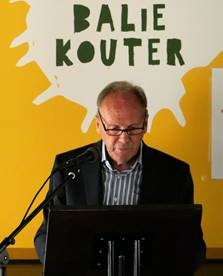

> nieuwsbrief > 2023 - nr 4
Inhoud
Hernieuwen
ledenbijdrage voor 2023
Even
herinneren. Wie dit tot nog toe naliet zijn ledenbijdrage voor
2023 te vereffenen vindt bij dit nummer andermaal een
betaalformulier. Dankzij een zuinig beheer blijft het ons
mogelijk om, niettegenstaande alweer gestegen druk- en
portkosten, de minimumbijdrage te behouden op 29 €. In ruil
daarvoor verzekeren we u de stipte toezending van het nieuwe Jaarboek Joris van Severen – het 27e al – dat in de
meimaand verscheen en van de vier nummers van ons kwartaalblad Nieuwsbrief Joris van
Severen. Vanaf het bedrag van 35 €
boeken we u met dank als steunend lid. Vereffening graag via
onze rekening BE29 4650 2267 2164 op naam van het Joris
van Severen Instituut, Izegem.
Overzicht
biografieën over Joris van Severen
Naar aanleiding van de verjaardag van Joris
van Severen, heeft Ruud Bruijns een filmpje gemaakt met een
bespreking van de biografieën die in de loop van der jaren zijn
verschenen over Joris van Severen:
Zie: https://youtu.be/OxPWIOwNtPw
De biografie van Dieter Vandenbroucke laat
voorlopig op zich wachten. Het werd volgens de website van De
Bezige Bij dit voorjaar verwacht, maar er is sindsdien geen
enkel bericht over de verschijningsvooruitzichten op dit werk.
Liber amicorum Maurits Cailliau
Zopas verscheen het Liber
Amicorum
voor Maurits Cailliau. Het bevat een selectie van
beschrijvingen, interviews, gedichten en herinneringen aan Maurits Cailliau en zijn betekenis voor de
Vlaamse en Heel-Nederlandse beweging. Verderop in dit nummer
leest u de toespraken die n.a.v. het verschijnen uitgesproken
werden op de huldiging die op 16 september uitgesproken werden
op het domein van de Baliekouter te Wakken. U kunt alsnog
deelgenoot worden aan deze hulde door een aankoop van het
hardbackboek, door overboeking van het bedrag van 32 Euro
(inclusief verzendkosten).
Weekend
20/21//05/2023 In Brugge en in Abbeville
De Mis, die doorging op 20 mei om 10u30, was
opnieuw zeer sereen en stijlvol. De Blindekenskapel is hieromtrent
uitstekend. E.H. Jan Tilleman ging de Mis voor én homilie was
inhoudelijk gekenmerkt door de Christelijke boodschap én de
religieuze insteek in het leven van Joris van Severen.
De herdenking in de Wollestraat om 11u30
verliep ook bijzonder sfeervol. Ere-schepen van Brugge Jean-Marie
Bogaert, sprak de aanwezigen toe. Historische gegevens werden nog
eens aangehaald. Een verwijzing naar het stadsbestuur is niet
onopgemerkt gebleven! De heer Stefaan Coudenys (voorzitter
Abbeville Comité) plaatste de herdenking in het teken van vrede
én de uitdrukkelijke wens tot beter begrip voor elkaar in ieders
verscheidenheid. Een welkomstdrankje bij de receptie was dan ook
zoals steeds “gemoedelijk”.
In Abbeville op 21 mei waren we aanwezig aan
het graf van JvS en Jan Ryckoort. Luc Seynaeve noemde ieder
welkom, Jozef Ameeuw bracht een gedicht naar voor, “Joris van
Severen”, dit geschreven door Bert Peleman. Martine Inghelbrecht
sprak het “Appel der 17 Provinciën” uit. Als co-voorzitter
van het Joris van Severen Instituut volgde de grafrede.
Inhoudelijk was er vooral aandacht voor de omstandigheden op 20
mei 1940 in Abbeville en werd ook de link gemaakt aangaande het
ideeëngoed van Joris van Severen
én het heden. De dag werd gezamenlijk afgesloten in
“L’étoile du jour” te Abbeville.
Luc Seynaeve, Co-voorzitter JvS Instituut
Grafrede 21
mei te Abbeville
21 levens koelbloedig afgemaakt. In groepjes
uit een onschuldige kelder gesleept. Met kogels en bajonetten uit
de geschiedenis geschreven. Voorgoed hun stem gesmoord in de
perfide afgrond van de wraak.
Sirenes van een luchtaanval, de ruïnes, de
bombardementen, de onmiskenbare bewijzen van een militaire ramp.
Het moet allemaal gezorgd hebben voor een apocalyptische sfeer.
Een zeker einde van de tijden, dat alle menselijke remmen op de
wreedheid wegnam en de poorten van de hel wijd openzette. Een
defaitisme dat zich uitte in de fanatieke overtuiging dat er iets
moest gebeuren, dat de vijand het niet helemaal naar zijn zin
mocht hebben, dat het beter was iemand te laten boeten voor het
dreigende échec. En zoals altijd wordt de meest weerloze dan de
zondebok. De haat wordt niet gefocust op de feiten, maar op een
beeld vertroebeld en misvormd.
Deze Franse militairen kweten zich als
gewillige beulen van hun gezamenlijke taak. Echte mensen werden
doodgeschoten maar ook de fantomen van hun eigen verziekte geest.
Er was een bevel nodig om die waan van voor hun eigen ogen weg te
nemen. Geen besef van wat er bezig was.
Hier werd een grootmoeder doodgeknuppeld, een
loodgieter vermoord, een schilder in het spoor van zijn mentor
geëxecuteerd. Maar ook een Abwehr-man vond hier zijn einde. Maakt
dat het bloedbad minder contentieus?
Elk jaar komen mensen samen in Abbeville om
getuigenis af te leggen, om de geschiedenis levend te houden; om
zichzelf een spiegel voor te houden met de existentiële vraag :
ben ik een mens? In het bijzonder komen we samen aan het graf
van JVS en Jan Ryckoort.
Om te herdenken! Herdenken betekent niet
alleen herinneren aan vroeger doch ook lessen trekken voor de
toekomst. Onze toekomst werd uitgetekend door Joris van Severen.
Een politieke boodschap gebaseerd op een staatsvisie die de
éénmaking van de Nederlanden beoogt. Een maatschappelijke
ordening gebaseerd op “solidarisme”.
Bijzondere aandacht voor het individu “Plus
est en vous” én dit ten dienste van het algemene belang. De
staat, de overheid heeft een opbouwende opdracht. Met de woorden
van Joris van Severen zelf uitgesproken op 08 december 1934 :
“De staat is slechts in dienst van de
persoonlijkheid. Alles in de wereld is daar tot dienst van den
mens”. Vandaag 21 mei 2023 zijn deze ideeën in elk geval
“waardig.” Vanuit Christelijk perspectief en socio-politiek
oogpunt kunnen we bevestigen : JVS is niet dood. Hij leeft.
Met dank voor jullie aanwezigheid aan het graf
van JVS en Jan Ryckoort vandaag. Veilig thuis toegewenst.
_______________
GRAFREDE
vanwege het Joris van Severen Instituut (voorzitter Luc
Seynaeve) én Stefaan Coudenys (voorzitter Abbeville Comité).
Deze tekst verscheen al onvolledig in de voorafgaande
Nieuwsbrief Joris van Severen. De hierboven cursief gezette
alinea’s betreffen de inbreng van Stefaan Coudenys, die om
onverklaarbare redenen wegviel in de vorige editie.
Arthur Raman en de nadagen van de Solidaristische Beweging
Hans Nelis.
Mijn bijdrage in het Jaarboek 27 over
de geschiedenis en het gedachtegoed van de Solidaristische
Beweging (SB) had een open einde.1 Op basis van
de beschikbare documenten en de schaarse herinneringen van nog
levende getuigen kon niet uitgemaakt worden wanneer de SB exact
opgehouden had te bestaan. Het laatste nummer van het strijdblad De
Solidarist (DS) verscheen in augustus 1979. SB Organisatieleider
Arthur Raman ventileerde in een bitter artikel weliswaar zijn
diepe ontgoocheling over de inertie en de apathie van ‘de
massa’, maar uit niets blijkt dat dit artikel ook een definitief
afscheid van de lezers betekende. Vruchteloos had hij in de
periode 1971-1974 wat hij noemde ‘gelijk-gerichten’ in zijn Solidaristisch
Verbond (SV) proberen te verenigen. De fusie eind 1974 van
het SV met de DSB (Dietse Solidaristische Beweging) van
Maarten van Nierop bracht de realisatie van zijn ‘Droom van
solidaristische eenheid’1 evenmin dichterbij.
Mijn huidig onderzoek, ter voorbereiding van
een bijdrage in het Jaarboek 28 over de Werkgroep/Werkgemeenschap
Delta/De Lage Landen, bracht enkele nieuwe feiten aan het
licht over het einde en de nasleep van de SB. Vooreerst stootte ik
in twee nummers (oktober en november 1980) van het maandblad Delta
op een merkwaardige aankondiging.2 In dit bericht
deelden de organisatieleider (Arthur Raman), de hoofdredacteur van
DS (Hendrik Broekaert) en de verantwoordelijke uitgever van DS
(Maurits Vanderbruggen) mee dat “wegens geldgebrek gedurende
de laatste maanden” (meer dan een jaar!) DS niet meer
verschenen was, dat de SB geen geld meer had om Delta te
steunen en dat zij durfden te hopen dat de abonnees van DS
voortaan hun abonnementsgeld aan Delta zouden over maken.
De vondst van deze aankondiging in Delta had voor mij een
dubbele betekenis. Ten eerste toont ze aan dat de SB op
zijn minst een jaar langer heeft bestaan dan ik in mijn Jaarboek
bijdrage aannam. Althans op papier, want of er in 1980 nog sprake
was van enige gecoördineerde activiteit is hoogst twijfelachtig.
De dood van algemeen voorman Maarten van Nierop op 19 juli 1979
was een fatale klap die de beweging niet meer te boven kwam1,3.
Ten tweede blijkt uit de aankondiging dat er een innige
band gegroeid was tussen het SV en Delta, sinds de eerste
toenadering tussen beide in het najaar 19761.
Na november 1980
verdwijnt de SB maar vooralsnog niet Arthur Raman in de nevelen
van de tijd: “de
schaarse aanhangers doken later op bij Vlaams-nationale
actiegroepen of sloten zich aan bij het initiatief van Arthur
Raman die met het Coördinatiecomité Algemeen Welzijn het
'zedelijk verval' te lijf ging”.3 Dit Coördinatiecomité was al
twee jaar eerder tot stand gekomen, meer bepaald na een ‘coördinatievergadering’
op 19 november 1978, waarop Arthur Raman een buitengewoon lange
toespraak hield en opriep om tot zijn comité toe te treden. Deze oproep werd
afgedrukt in een brochure getiteld Wat is en wat wil
Coördinatiecomité Algemeen Welzijn4, het
eerste nummer van het tijdschrift Coördinatie5
én De Solidarist van januari 1979. Coördinatie
vermeldde initieel 22 namen van personen die, al dan niet namens
een organisatie of een tijdschrift, zich bij het Coördinatiecomité
hadden aangesloten. Onder hen Hendrik Libert, de voorzitter van
de Werkgroep Delta, Jef Werkers, voorzitter van het Studie-
en documentatiecentrum Joris van Severen en de top van het
Solidaristisch Verbond binnen de SB (Raman, Broekaert,
Vanderbruggen). Zo kregen we dus de hoogst merkwaardige situatie
dat Arthur Raman de leiding had van twee organisaties, waarbij
hij zichzelf namens de eerste organisatie aansloot bij
de tweede.
De
Beginselen van het Coördinatiecomité werden
afgedrukt in zowel de genoemde brochure als in het eerste nummer
van Coördinatie. Ze
zijn gegroepeerd rond zeven grote thema’s:
godsdienstvrede, algemeen welzijn, geestelijke gezondheid,
nationale opvoeding, economie en financiën,
volksgezondheid/lichamelijke opvoeding/urbanisatie en
rechtsbedeling. Thema 3 krijgt bijzondere aandacht. Dit heeft Jan
Creve wellicht doen besluiten dat het Coördinatiecomité
vooral “het zedelijk verval te lijf wilde gaan”. De op
ethisch vlak uiterst behoudende standpunten van Arthur Raman
vormden voor sommige leidinggevenden in de DSB een beletsel voor
samenwerking, zij wezen destijds de fusie met het SV dan ook
radicaal af.6 Ik hoop in de nabije toekomst aan de hand
van een onderzoek van de bewaard gebleven nummers van Coördinatie
het profiel en de activiteiten van het Coördinatiecomité nader
in kaart te kunnen brengen. In de Beginselen bespeur ik
alvast één zinnetje dat een echo vormt van het ideeëngoed van
Joris van Severen en Louis Gueuning: “de filosofische
grondslag van dit beginsel (‘Algemeen Welzijn’)
steunt op de organische samenhorigheid van persoon en
gemeenschap”.
__________________
Noten
1 Hans NELIS, De droom van Solidaristische
eenheid. De Solidaristische Beweging (1974-1979), Jaarboek 27, pp.
147-2004, Joris van Severen Instituut, Izegem (2023).
2 Ze werd (vrij klein)
in de vorige Nieuwsbrief (3e
trimester 2023, p. 8) afgedrukt.
3 Jan CREVE, Solidaristische
Beweging
(1974-1980). https://nevb.be/
4 Wat is en wat wil
Coördinatiecomité Algemeen Welzijn? s.a., 22 p. ADVN
VBRB7807.
5 Coördinatie. Tweemaandelijks
tijdschrift van het Coördinatiecomité Algemeen Welzijn. Het
ADVN bezit 5 jaargangen (1979-1986), t.e.m. het nr. 42. ADVN
VY260
6 L.M., persoonlijke
mededeling.
Charles-Ferdinand Nothomb is
overleden
Hij speelde een niet geringe rol in de
Belgische partijpolitiek en dient dus gemeten met de maten
waarmede wij die politiek meten. Toch enkele opmerkingen: hij was
de Benelux heel gunstig gezind en hij had jarenlang een abonnement
op Delta. Hij sprak Nederlands, maar alles behalve
perfect. Ooit werd ik uitgenodigd op de opening van het
jachtseizoen op zijn kasteel in Habaye-la-Neuve, waar zijn vader
Pierre (ons beter bekend) begraven ligt. Ik antwoordde dat ik
aanwezig zou zijn met mijn zoon Roeland. Toen wij er dan
aankwamen, ging ik hem beleefdheidshalve goede dag zeggen en hij
repliceerde met: ”... en dat zal dan Roeland wel zijn zeker?”
Over een goed geheugen gesproken! Op die opening was overigens de
Koninklijke Antwerpse jachthoornkring aanwezig, naast een 20-tal
Franse en Duitse ensembles. Uniek! Jachthoorns voor het kasteel
opgesteld lieten een melodie horen en ergens hogerop in de bossen
antwoordden andere ensembles. Zijn grote verdienste rust evenwel
in zijn medewerking en steun aan de vereniging “La Grande
Région”, met zetel in Luxemburg. Dit zijn de gebieden tussen de
Maas, de Moezel, de Saar en de Rijn (nu is gans Wallonië erbij).
De “landkaart” daarvan staat geschilderd op de inkompoort van
zijn kasteel.
Vik
Eggermont
Terugblikkend op 16 september te Wakken
Bij een liber amicorum over Maurits Cailliau
mag een groet vanuit Wakken zeker niet ontbreken. Deze gemeente
heeft voor onze te huldigen Maurits steeds een bijzondere
betekenis gehad. Het was de plaats waar pastoor Hugo Verriest
actief was (1888-1895) en van waaruit hij veel voeding gaf aan de
Vlaamse beweging.
Het is ook de geboorteplaats van Joris van
Severen (1894), de figuur die Maurits zijn gehele leven zo sterk
heeft geboeid.
Ik
had een gesprek met Wakkenaar Denis Haerens – ondervoorzitter
van de plaatselijke heemkundige kring 'Het Bourgondisch erfgoed'.
Als jong ADJV'er herinnert hij zich hoe Maurits Cailliau zich als
tiener reeds ten dienste stelde in de leiding van het ADJV. Het
Algemeen Diets Jeugdverbond was onder de koepel van VZW Jeugdzorg
gevestigd in het kasteel van Wakken.
Burgemeester Koen Degroote
aan het woord
Dit kasteel hoorde in vroeger eeuwen toe aan
een bastaardtak van de Bourgondische hertogen. Sommige leden van
die familietak hebben notoire functies bekleed ten tijde van "de
zeventien provinciën".
In 1954 kreeg dit kasteel de benaming “huize
Frans Daels" en een vijftal jaren later "huize Cyriel Verschaeve".
Denis Haerens vertelt verder: "Maurits kwam met
de trein naar het station in Tielt. Van daaruit was het tien
kilometer wandelen. Ik zie hem nog stappen met zijn rugzak. In
Wakken was hij leider van het Verriest-vendel. Leeftijdsgenoten
van Denis Haerens die ook deel uitmaakten van dit vendel waren:
André Desmet, Tony Sengier, Garry Sengier, Arseen Tack, Martin
Derijcke, John en Pol Ducatteeuw, Luc en John Vanhoutte, Luc
Verbeke.
Het was ook de periode dat Staf Vermeire de
dagelijkse leiding waarnam in huize Daels en Verschaeve. Deze Staf
Vermeire heeft bij velen, onder wie Maurits een bijzondere indruk
nagelaten. Later heeft hij er een bijdrage over geschreven (Staf
Vermeire 1926-1987 Díets jeugdeider en rebel).
Aan deze Wakkense ADJV-periode kwam een einde
omstreeks 1964 toen het kasteel in private bewoning overging. In
het novembernummer van 1962 van het tijdschrift Ter Waarheid
werd dit nakende afscheid aangekondigd. Maurits schreef hierin een
bijdrage waarin hij terugblikt op deze voor hem heerlijke periode
(vanaf 1956 - het jaar waarin hij twee uniformen heeft gedragen).
Hij had het over "Wakken een naam met klank voor de
Diets-nationale generatie.” Eveneens over een reeks
onvergetelijke beelden van kameraadschappelijke ontmoetingen en
geestdriftige zangstonden. Hij besloot met: "het verdwijnen van
Wakken zal een leemte doen ontstaan. Tot deze leemte behoren wij."
Vanaf 1982 zullen echter de Wakkense banden
terug nauwer worden aangehaald. Toen ontstond het comité 'Wakken
herdenkt' onder impuls van dr. Roland Bekaert (1928-2021). Dokter
Bekaert - bewoner van het geboortehuis van Joris van Severen was
vastbesloten de herinnering aan figuren als Verriest en Van
Severen levendig te houden. Verschillende activiteiten werden
georganiseerd. Om er enkele te noemen:
o aanbrengen
gedenkplaat aan het geboortehuis van Joris van Severen (1982)
o onthulling
gedenkplaat Hugo Verriest aan de kerk (1984)
o grote
tentoonstelling Hugo Verriest -Joris van Severen (1984)
o diverse
academische zittingen.
Hier was Maurits Cailliau een gewaardeerd
medewerker. Het was in deze periode dat ikzelf hem leerde kennen.
In de vele vergaderingen waar hij aanwezig was, straalde hij rust
uit. Stemverheffingen stonden niet in zijn woordenboek. Aan
werkkracht daarentegen ontbrak het hem niet. Ook viel op dat hij
zeer goed gedocumenteerd was.
In de jaren 1980-90 werd er enkele keren na de
bedevaart naar Abbeville een slotplechtigheid georganiseerd in
Wakken. Maurits Cailliau was hier telkens een vaste aanwezige en
speelde een actieve rol.
Een grote uitdaging voor het plaatselijke
comité 'Wakken herdenkt', was de uitbouw van een museum. De
genoemde en voorname Wakkense figuren moesten een blijvend
memoriaal kunnen krijgen. Aanvankelijk werd het museum gevestigd
in de vroegere kloostergebouwen aan de Kapellestraat, maar sinds
2013 is het overgebracht naar het bezoekerscentrum bij provinciaal
domein 'de Baliekouter'.
Het bijeenbrengen van diverse documenten en
bezienswaardigheden vormde hier een hele opgave en is een werk dat
nooit af is. Ook voor de bijdrage die hij hieraan levert, zijn we
Maurits vanuit Wakken zeer dankbaar.
Maurits, voor alles wat je betekende voor
Vlaanderen en zijn inwoners wensen we u vanuit het kleine
Bourgondische Wakken te danken! En weet dat u hier bij ons steeds
welkom bent.
Bij wijze
van welkom
Luc Seynaeve, voorzitter Joris van
Severen Instituut
Gegroet
allen aanwezig,
Beste Maurits,
vandaag overhandigen wij het Liber Amicorum
omtrent U! Dit niet ter gelegenheid van een afscheid of jubileum
maar als een “momentum” die wij inlassen aangaande uw
betrokkenheid omtrent Joris van Severen én het Verdinaso.
Luc Seynaeve aan het woord
Ik wil in elk geval de heren Ruud Bruyns, Bert
Dekeyser en Wido Bourel van harte danken voor het initiatief én
het engagement dit boek te hebben gerealiseerd. Ook de
schrijver-medewerkers.
“Wollig gedoe” is hier niet op zijn plaats.
Vanuit de optiek van Van Severen past ook hier: trouwe
verbondenheid, de dienende taak, correctheid.
In 1956 werd u lid (stamnummer 363) van het
Algemeen Diets Jeugdverbond. U was toen 18 jaar. In 1958 én 1961
was u bijzonder betrokken bij de verbondsleiding van het Blauwvoet
Jeugdverbond én de oprichting van het Algemeen Diets
Jongerenverbond. Verdere stappen volgden bij diverse Heel
Nederlandse verenigingen. Zannekin, Oud Algemeen Diets
Jongerenverbond en het Studie- en documentatiecentrum Joris van
Severen te Aartselaar onder leiding van Jef Werkers. Dit waren de
jaren 70-80-90.
In 1992 werd u medeoprichter van de Stichting
Joris van Severen. In 1996 werd u ook mede oprichter van het
Studiecentrum Joris Van Severen. Het vroeger Studie- en
coördinatiecentrum te Aartselaar en het Comité Abbeville
behoorden tot uw bijzondere interesse.
Rode draad doorheen deze stappen: engagement,
het stille werk, beheersende verbetenheid om af te werken,
plichtsbewust, steeds gericht en bezield door kwaliteit.
De maatschappelijke doelstelling van de
Stichting Joris van Severen: artikel 3 statuten 29/2/1992 luidt
als volgt :
“Het maatschappelijk doel : De persoon en het
werk van Joris Van Severen in ere houden en ze aan de anderen te
leren kennen en waarderen. Daartoe organiseert de vereniging naast
godsdienstige ook andere herdenkingen. Spreekbeurten, publicaties,
studies of enige andere activiteit. Tot dit doel onderneemt zij
allerhande initiatieven die rechtstreeks of onrechtstreeks, tot de
verwezenlijking van dat doel kunnen bijdragen. Zij mag daartoe
alle noodzakelijke roerende of onroerende goederen bezitten of
overwegen.” Dit hebt u steeds loyaal behartigd.
Jaarboeken en Nieuwsbrieven zijn degelijk én
fungeren als objectieve wetenschappelijke bron omtrent het leven
en gedachtengoed van Joris van Severen. Deze jaarboeken omvatten
een historische correcte duiding die alle misverstanden én
onjuistheden uitsluiten. Het geheel van de jaarboeken vormt een
politieke historische méérwaarde, waaromtrent u het pionierswerk
hebt verricht.
Mijn bijzondere appreciatie als voorzitter van
het Joris van Severen Instituut, dit ook in naam van het bestuur,
de Algemeen vergadering én de leden.
Uw jaarlijkse aanwezigheid te Abbeville aan het
graf in de meimaand, uw présence in de misviering én de viering
van de voer Brugse oorlogsslachtoffers in de Wollestraat te Brugge
zijn betekenisvol.
Woord en daad in logische orde, consequent én
steeds voornaam. U bent een “Vanseveriaan”. Trouw aan het
gedachtengoed én dit siert U. Steeds objectief, milder en steeds
méér genuanceerd door de jaren heen. Doch nooit geen verlies van
identiteit.
Mede door U werd het Joris van Severen
Instituut in 2022 opgericht. De Stichting én het Studiecentrum
beoogden omzeggens dezelfde maatschappelijke doelstelling én de
omvorming tot één vereniging is logisch én betekent voor de
verdere toekomst één inhoudelijke meerwaarde. Binnen beide
verenigingen waren hieromtrent wel wat verschillen in ideeën qua
aanpak, doch eind goed, alles goed. Een heterogene stuurgroep is
geïnstalleerd en staat klaar om historisch werk actief verder te
zetten in het perspectief van mei 2040: 100 jaar na het overlijden
van Joris van Severen.
Geen toekomst zonder verleden, geen verleden
zonder toekomst. U was én bent een sleutel figuur! Wij zijn fier
op U én U mag terecht fier zijn op uzelf.
Niets wordt “alleen” gerealiseerd. U hebt
veel verwezenlijkt, doch heel wat medewerkers waren steeds loyaal
én bijzonder actief. Alle namen noemen zou te uitgebreid zijn.
Doch, twee personen wil ik noemen van bijzondere betekenis: Dhr.
Vik Eggermont en Dhr. Luc Pauwels. Beiden met een bijzonder staat
van dienst: vandaar, dat ik bij deze gelegenheid jullie drie
aanspreek met de hoedanigheid van erevoorzitters van Joris van
Severen Instituut. Jullie hebben mede door het vele werk in het
verleden de wording van het Joris van Severen Instituut vorm
gegeven. De toekomstige opdracht en taak van het Instituut moet
verder worden uitgelijnd. Wat in elk geval steeds inhoudelijk zal
geaccentueerd worden is dat:
o Joris
van
Severen was een Vlaamse politicus. Zijn Vlaams-nationale visie is
een essentieel onderdeel in zijn vormingsproces, ontwikkeling en
wording tot politiek leider.
o Het
concept
der Nederlanden, de Lage Landen, de 17 Provinciën is staatkundig
een uiterst interessante piste. Ook de burgers van morgen zullen
aandacht hebben voor de “Low Countries”.
o Het
“Plus
est en vous” gehalte is een uiting van het personalisme. Het
recht van de individu tot volle ontplooiing. De overheid in dienst
van de burger, de burger in dienst van de gemeenschap .
o Het
“Solidarisme”
is een uitweg én oplossing voor de klassieke links-rechtse
tegenstellingen. Democratie op basis van een harmoniemodel en niet
op basis van een conflictmodel.
Ik wil eindigen met een gemeende waardering uit
te spreken naar U toe. Dit in naam van ieder hier aanwezig.
Laudatio
Luc Pauwels
Luc Pauwels aan het woord
"Het verleden gaat voorbij, het heden
blijft." Onder deze titel publiceerden we al in de Joris
van Severen Nieuwsbrief 2/2023 (pp. 15-18) de tekst die de
auteur als laudatio uitsprak op de huldiging van 16 september te
Wakken. Omwille van plaatsbesparing verwijzen we naar vernoemd
nummer.
De zaal was stemmig versierd met de Leo
belgicus- en de oranje-blanje-bleu-vlaggen en de schildvlaggen van
de 17 provinciën, stammend van het Verdinaso.
Dankwoord bij de
voorstelling ‘Liber amicorum
Maurits Cailliau
Kameraden,
Zo spraken we elkaar destijds - in de jaren van
de jeugdbeweging – aan. En vaak was dat naar aanleiding van
bijeenkomsten hier te Wakken, waar we toen de kasteelbewoners
waren. Jullie vormen de falanx van mijn oudste vriendengroep. We
waren kasteelbewoners met als kasteelheer verbondsleider Staf
Vermeire, die er samen met Wilfried van Durme en de mindervalide
oostfronter Albert –
hij kreeg eerst jaren later een behoorlijke prothese - huisden.
Maurits Cailliau
aan het woord
Vrienden,
Dat zijn diegenen die er na de
jeugdbewegingsjaren bijkwamen en met wie ik via talloze
initiatieven verder kon bouwen aan de idealen die via de
jeugdbeweging de onze geworden waren.
Jullie zijn talrijk en stammen uit de
concentrische cirkels waar het leven me tijdens de
voortschrijdende jaren binnenvoerde. Nieuwe gezichten, nieuwe
middens, waarbinnen ik dienstbaar kon zijn ten bate van de ideeën
waarvan de kiemen op het Wakkense kasteel gezaaid werden.
Kameraden en Vrienden,
Sindsdien ijveren we met z’n allen
onverdroten voor wat een Hendrik Fayat “het onontbeerlijke
eenheidsbesef van de Nederlanden” noemde. Waar quasi het geheel
van de huidige Vlaamse beweging dit Nederlandse perspectief prijs
gaf, of amper nog ’n voetnoot waardig acht, blijven wij
beklemtonen dat “terug leiden naar onze Nederlandse
‘roots’”, doorheen de straks twee eeuwen oude Belgische
geschiedenis, de eerste en voornaamste opdracht van de Vlaamse
Beweging is en blijft.
In de jaren van het interbellum was dit een
vanzelfsprekend gegeven. In de naoorlogse jaren is de
“Nederlandse gedachte” – als kern van de zingeving van ons
nationaal streven – evenwel quasi volledig weggedeemsterd. De
oorzaken daarvan zijn velerlei en kaderen mede in de waan “dat
we beter doen, wat we zelf doen”. Illusie, uiteraard, zoals we
tekens weer kunnen vaststellen!
Dat daarmee onze Nederlandse
toekomstperspectieven danig gehypothekeerd werden en worden ligt
voor de hand, nu we ons moedwillig dreigen op te sluiten in een
“Vlaamse staat” binnen de Belgische begrenzingen.
Hoe zeer dreigen we aldus afgesneden te worden
van onze Nederlandse geschiedenis en aldus medeplichtig te worden
aan de aan gang zijnde nieuwe verkaveling van de historische
Nederlanden, nu er naar gestreefd wordt het werk van de muiters
van 1830 door te trekken.
Op de recente IJzerwake viel me ’n boekje –
de auteur noemt het een ‘brochure’ – met als titel
“Vlaamse Beweging en Vlaams Nationalisme” in handen. Een
geschrift daterend van 1950 van de hand van Frans van der Elst. De
auteur gaat er de evolutie van de Nederlandse gedachte op na
sedert het ontstaan van België en staaft zijn betoog met tal van
citaten die telkens weer de oorspronkelijke Heel-Nederlandse
bezieling van de beweging beklemtonen. Ik kom daarop later meer
uitgebreid terug in de ‘ADJV-Schriften’.
Na afloop aan de
Baliekouter te Wakken
Dezelfde Nederlandse bezieling was het trouwens
die tot de bevrijdende dissidentie binnen de oorlogsjeugdbeweging
heeft geleid - weg van de misschien begrijpelijke doch niettemin
verfoeilijke collaboratie – en waarbinnen onze jeugdbeweging
diepe wortels had.
Van die Nederlandse bezieling getuigt ook,
zoals gezegd, dat geschrift van Van der Elst uit 1950. Daaruit
bleek dat de later voorzitter van de Volksunie toen nog terdege
weet had van waar het om ging. Niettemin zou die partij in niet
geringe mate medeverantwoordelijk worden voor de teloorgang van de
Nederlandse gedachte binnen de Vlaamse Beweging. Die partij, samen
met vele andere mededaders, uiteraard.
Kan dat nefaste tij nog gekeerd worden? Wij
alvast geven onze pogingen daartoe niet op!
Ik besluit met een woord van dank nog.
Vooreerst aan het adres van Koen Degroote, burgemeester van
Wakken/Dentergem, die de Baliekouter ter beschikking stelde voor
deze dag – de site waar het museum ‘Van Hugo Verriest tot
Joris van Severen’ een blijvend onderdak vond. Verder uiteraard
ook dank aan de vrienden die, zowat achter m’n rug om, instonden
voor de organisatie van deze dag en het verschijnen van het
‘Liber amicorum’. Ik weet dit alles hoog te waarderen!
Hilde
Thiers (Tielt 25 oktober 1924
– Rijmenam 20 augustus 2023). Hilde was een dochter van
Emiel Thiers. In het Jaarboek Joris van Severen 20
(2016) publiceerde ze, samen met haar zus Lutgart, haar
herinneringen aan de gebeurtenissen die leiden tot het einde
van het Verdinaso in het voorjaar van 1941.
Raymund
Bruning (29 maart 1936 – 15
augustus 2023), zoon van Henri Bruning en samen met z’n
broer onvermoeibaar actief op de website;
www.henrinbruning.nl
ter rehabilitatie van hun vader. In het Joris van Severen
Jaarboek 21 (2017) las u in dit perspectief zijn
bijdrage ‘Einem andaurenden Kampf gegen die Deutschen’.
In deze rubriek
verwijzen we zonder veel commentaar naar recente publicaties
waarin Joris van Severen en/of het Verdinaso vermeld worden. We
citeren de meest treffende passussen woordelijk zonder daarin
volledigheid na te streven. We verzoeken onze lezers, met ons,
uit te zien naar publicaties die voor deze rubriek 'stof' kunnen
leveren en ons kopie van de betreffende passages toe te sturen.
Golfslag
Vlaams-nationalistisch
cultureel maandblad, uitgegeven te Antwerpen (1946-1950) onder
het motto "Jong, durvend, gelovend".
Het eerste nummer
verscheen in maart 1946 en het was na Rommelpot
(december 1945) het tweede naoorlogse project van
Vlaamsgezinde en katholieke jongeren. Golfslag had een
oplage van ongeveer 2000 exemplaren. De redactie bestond
aanvankelijk uit Manu Ruys, Adriaan de Roover, Ivo
Michiels (pseudoniem van Rik Ceuppens), Hugo Grimberger, Joris
de Wolf en Roland van Oplinter. Enkel de eerste drie bleven in
de redactie, waarin later ook Piet de Meeuw, Albe (pseudoniem
van Renaat
Joostens), Hendrik Storm (pseudoniem van Paul de Vree),
Lambert Stiers (pseudoniem van Paul
Lebeau) en Paul Haimon werden opgenomen.
De oprichting van
Golfslag moet worden gesitueerd tegen de achtergrond van
de eerste naoorlogse initiatieven van niet-gecompromitteerde flaminganten, die
resulteerden in een verstevigde band tussen katholieken en
nationalisten. Het blad steunde op een katholieke
ethisch-moralistische grondslag en hoewel het zich aanvankelijk
buiten de partijpolitiek wilde houden, werden al snel
sociaal-politieke standpunten ingenomen. Zo streefde Golfslag
de eenheid tussen Noord en Zuid na, met behoud van de
bestaande staatsgrenzen, en noemde het de wegvoeringen van 1940
(Spooktreinen) een van de
hoofdoorzaken van de collaboratie.
Daarbij aansluitend zag het in de repressieve "haatmaatregelen"
van de Belgische regering (repressie)
de oorzaak van de naoorlogse vooruitgang van de V.B. Het richtte
een steunfonds op voor missionarissen, gebroodroofden en
geïnterneerden en organiseerde, onder leiding van Herman
van Fraechem, en met medewerking van Ast Fonteyne en Antoon
vander Plaetse, kunstavonden, gewijd aan Zuid-Afrika,
Ernest Claes, Stijn
Streuvels en Felix
Timmermans. Het dacht Europees en achtte een toenadering
tussen Oost en West wenselijk.
(Bron: NEVB)